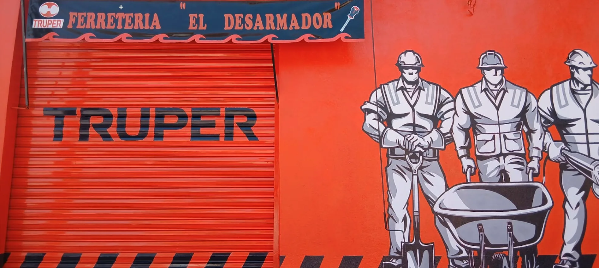

Hogares y compras de urgencia
Para reparaciones, mejoras y necesidades rápidas en casa.
FERRETERÍA EN HUAMUXTITLÁN
En El Desarmador atendemos a hogares, agricultores, albañiles, maestros de obra, plomeros, electricistas y negocios de Huamuxtitlán con trato respetuoso, atención cercana y soluciones para el día a día.
Tu herramienta de cada día.

Cerca de ti
Ferretería local en Huamuxtitlán, enfocada en atender compras para el hogar, la obra y el campo con trato cercano y soluciones prácticas para el día a día.
El Desarmador - Tu herramienta de cada día.
Servicio local
En El Desarmador atendemos a quienes necesitan resolver, reparar, construir o trabajar con herramientas y productos útiles para el día a día.
Para reparaciones, mejoras y necesidades rápidas en casa.
Para quienes trabajan la tierra y buscan productos útiles, atención cercana y soluciones prácticas.
Para quienes necesitan herramientas, consumibles y productos que ayuden a avanzar en sus trabajos.
Para trabajos de instalación, reparación y mantenimiento.
Para quienes necesitan apoyo ferretero, productos bajo revisión y atención clara.
Qué encuentras en la tienda
Estamos fortaleciendo nuestro surtido con productos útiles para casa, campo, reparaciones y obra.
Opciones prácticas para reparaciones, mantenimiento y trabajo diario.
Equipos y accesorios sujetos a disponibilidad o revisión bajo pedido.
Productos para instalación, reparación y mantenimiento eléctrico.
Soluciones para conexiones, tubería y reparaciones comunes.
Tornillos, taquetes, remaches, grapas y elementos de sujeción.
Materiales de uso frecuente para trabajos, reparaciones y pequeñas obras.
Productos para preparar, reparar y mejorar superficies.
Artículos relacionados con construcción, mantenimiento y mejoras del hogar.
Pagos
Ubicación
En El Desarmador creemos que una buena ferretería no solo vende productos: también construye confianza con cada cliente, cada saludo y cada compromiso cumplido.
Cotiza rápido
Mándanos el producto que necesitas, medida, cantidad aproximada o una foto de referencia. Te atendemos con claridad y revisamos disponibilidad u opciones bajo pedido.
Ubicación
Estamos en Huamuxtitlán, Guerrero, para atender a familias, trabajadores, agricultores, maestros de obra y negocios de la zona.
Encuéntranos en Google Maps
Abre la ubicación exacta para llegar fácilmente a El Desarmador. Cómo llegarHorario
Abrimos en horarios útiles para compras de casa, campo, reparación y obra. Si tienes duda sobre disponibilidad, escríbenos por WhatsApp.